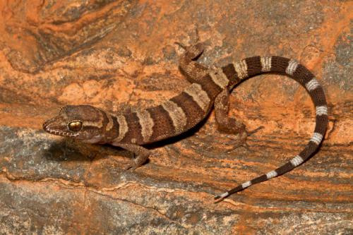

Biography
James did his Master’s at Villanova University under Dr. Aaron Bauer and Dr. Todd Jackman, where he became accustom to phylogenetics and systematics. Initial field study was hamper by the Arab Springs uprisings in Egypt and Libya. Luckily he made it down to South Africa for field work, where he hopped in the back of a pick up truck and journeyed the 2500 km to make it out into the field of Angola. His Master’s thesis focused on the taxonomy/systematics of Palearctic naked-toed geckos and the phylogeography and phylogenetics of Prosymna snakes.
Research
My interests in my PhD, under Dr. Fujita, are observing the dynamics mechanisms of gene flow between populations and trait evolution using genomic data and model based statistics to elucidate evolutionary change and causes of speciation in populations of geckos in Oceania.
Teaching
I teach Zoology (BIOL 3454) in the Spring 2017 semester.
publications
Taylor, D. J., Titus-Mcquillan, J., & Bauer, A. M. (2012). Diet of Chalcides ocellatus (Squamata: Scincidae) from Southern Egypt. Bulletin of the Peabody Museum of Natural History, 53(2), 383-388.
Bauer, A. M., Masroor, R., Titus-Mcquillan, J., Heinicke, M. P., Daza, J. D., & Jackman, T. R. (2013). A preliminary phylogeny of the Palearctic naked-toed geckos (Reptilia: Squamata: Gekkonidae) with taxonomic implications. Zootaxa, 3599(4), 301-324.
Useful Links
Having trouble with Pages? Check out our documentation or contact support and we’ll help you sort it out.